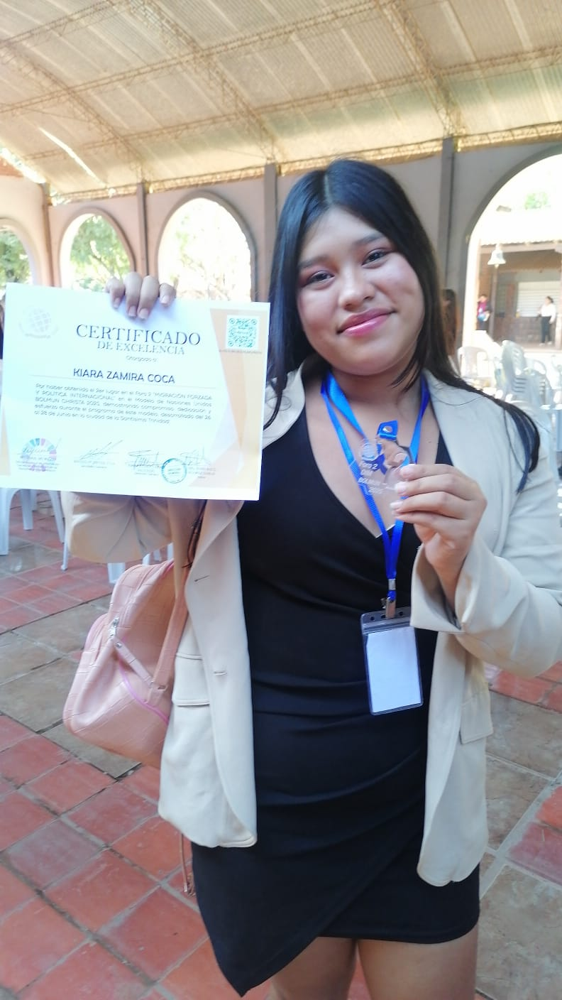

Ella es alguien amable y medio chinchosa conmigo, pero la quiero mucho . Aunque aveces me molesta que me este fastidiando un poco ya que soy alguien un poco impaciente y que disfruta un poco del silencio.
Pese a que somos personas opuestas en algunas áreas, nos llevamos bien, con algunos malentendidos, pero bien a fin de cuentas.
Zamira es alguien imperactiva que cuesta cansarla para tenerla quieta en un solo lugar, además de ser alguien procrastinadora y floja en el colegio. Siendo que me pide que la ayude siempre para que tenga buenas notas, pese a que va encontra de mis principios en algunos casos, pero la ayudo.
Nos conocimos en el colegio, en 4to de secundaria para ser más exactos, no le dí importancia a ella al inicio, por que estaba concentrado en mi mismo y de adaptarme al nuevo entorno en el cual estaba. No interactuabamos mucho, ya que normalemente me juntaba con mis amigos que hice los primeros días (ella 2 días después de que yo llegué al colegio).
Nos conocimos por tener amigos en común, aunque ella normalmente hablaba solo con mujeres y no me metia en eso, de ahí en parte es que me dice chismoso. Ósea, parte de lo que son mis acciones y mis actitudes han sido inculcadas por Zamira y Melani, chimoso y migajero, pero no me importa, porque las quiero mucho.
No supe cuando ni en que momento, pero ya eramos amigos y para aún más sorpresa, mejores amigos. En ese punto sinceramente no entendi nada, asi que hice lo que normalmente hago, no le doy importancia y sigo con mi vida.
Tú sabes que te quiero, a pesar que no este junto a ti o no salga contigo, pero siempre estaré para apoyarte en lo que pueda. Puede que no se los diga aveces, ya sea por que no es algo que haria o por ego aveces, pero eres una de mis mejores amigas y siempre estaré para apoyarte en lo que pueda.
Te quiero mucho , eres una de las personas más importantes en mi vida y siempre estaré para ti, aunque no lo demuestre. Espero que entiendas que siempre estaré aquí para ti, aunque no lo diga.